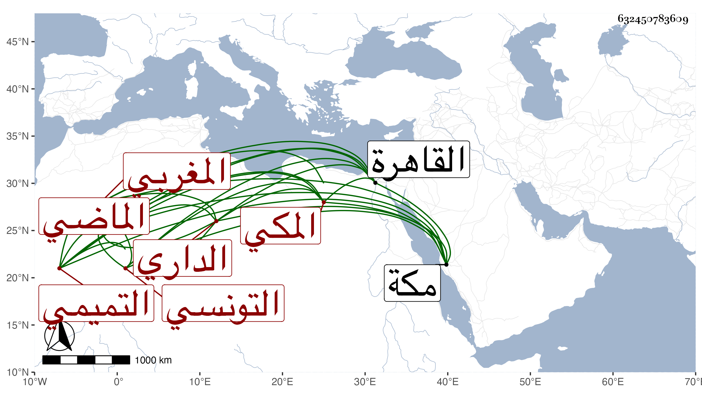

0902Sakhawi.DawLamic.ITO20230111-ara1.EIS1600.632450783609
Biography ID: 632450783609
446
محمد بن محمد بن عمر بن محمد بن أحمد محيي الدين أبو زرعة بن الشمس التميمي الداري المغربي التونسي الأصل المكي الماضي أبوه ويعرف كهو بابن عزم . ولد بمكة في شوال سنة اثنتين وخمسين واعتنى به أبوه فأحضره وأسمعه واستجاز له واقرأه القرآن وكتبا واشتغل وتميز وارتحل إلى القاهرة فأخذ فيها عن الجوجري ويحيى بن الجيعان والسنهوري وآخرين وحضر عندي يسيرا ورجع فلم يلبث أن مات في ربيع الأول سنة أربع وثمانين وتوجع أبوه لفقده ووصفه بالفقيه العالم الفاضل المجاز بالتدريس والإفادة عوضه الله الجنة .
